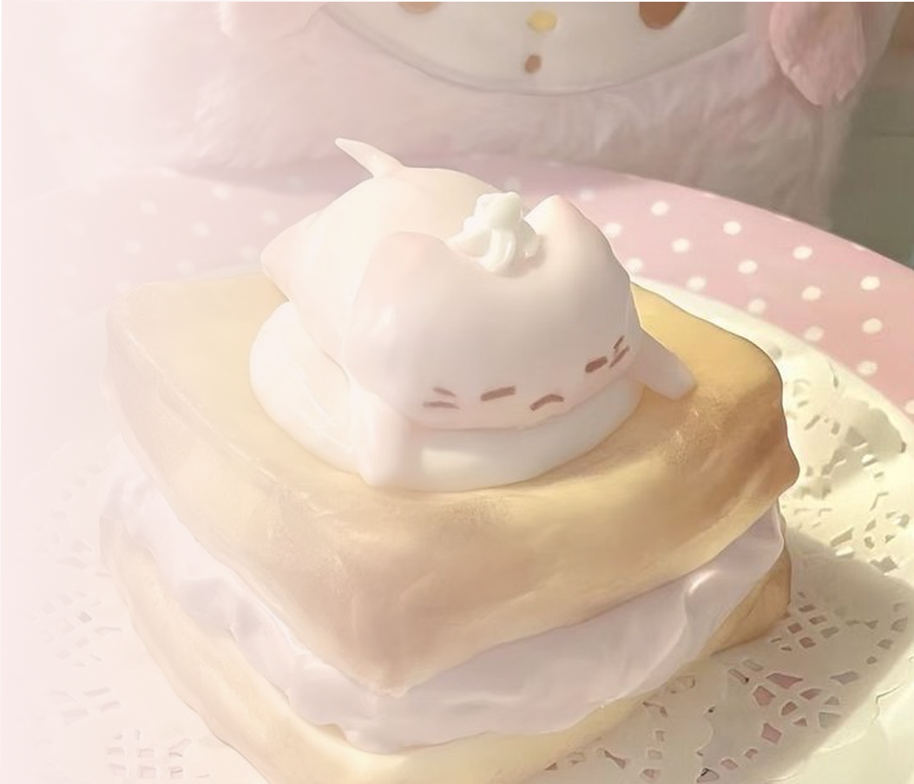

about us
Meet Anteiku Cafe
We created Anteiku Cafe as a cozy space where delicious Asian food meets pure joy! Our philosophy is simple: fresh ingredients, aesthetic presentation, and wholesome comfort.
Every dish — from our signature curry to fluffy pancakes — is made with love and care. Whether you love kawaii culture or just crave delicious desserts, this place is made for you! ♡
We believe that good food brings people together. Step into our cozy world, take a break from the busy day, and enjoy warm drinks, sweet treats, and lovely moments with your favorite people. Whether you’re stopping by for a quick coffee or spending a sweet afternoon with friends, we’re always happy to welcome you!
